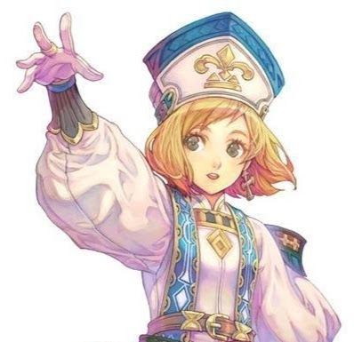

introdução
Bem-vindo a wiki dos escolhidos, aqui você ira saber tudo sobre os
personagens e historia do nosso RPG, aproveite.
Sobre
Os escolhidos
E um RPG de aventura com o sistema de DeD mestrado pelo Jadson Daniel, ele se passa em uma época
medieval onde demônios invadem o
mundo e os únicos que podem para-los são os escolhidos, heróis que foram abençoados pelos deuses, e
são capazes de enfrentar os demônios.
Oque é um RPG
RPG é um jogo de interpretação de papéis no qual os jogadores assumem o papel de personagens fictícios
em um mundo imaginário. Nesse tipo de jogo, há dois elementos principais: os jogadores, que interpretam
seus personagens, e o mestre, que interpreta os NPCs (personagens não jogáveis), narra os acontecimentos,
conduz os combates e gerencia o mundo em geral.
Os RPGs geralmente utilizam sistemas de dados, como os dados poliédricos (d4, d6, d8, d10, d12 e d20),
que servem para determinar o sucesso ou fracasso de ações como ataques, interações com NPCs, testes de habilidade e
exploração.
Caso queira saber mais sobre RPGs e seus sistemas acesse o site do
livro do DeD
Mundo de "Os Escolhidos"
é um mundo de fantasia épica que compartilha diversos elementos clássicos do gênero — como goblins, orcs, bruxas,
mortos-vivos e inúmeras criaturas místicas — mas se destaca por sua história marcada pelo domínio demoníaco ancestral e
pelas complexas relações entre seus povos e reinos.
História
O mundo de Os Escolhidos foi, em eras antigas, governado por demônios. No entanto, uma traição interna resultou
na expulsão dessas criaturas, que foram lançadas ao Inferno. Desde então, os demônios tentam retornar ao plano
mortal e reconquistar sua antiga glória, interferindo frequentemente na história do mundo.
Organização do Mundo
- O mundo está dividido em três principais estruturas:
- Reinos (governos territoriais e políticos)
- Espécies (como elfos, feras, orcs, anões, entre outros)
- Biomas (regiões com climas e características naturais distintas)
Reinos
Reino Humano – Antros
O principal reino dos humanos, conhecido por sua economia estável e agricultura altamente desenvolvida. É o mais famoso
entre os reinos humanos.
- Rei: Matteo antro II
- Idade: 68 anos
- Classe: druida LV-15
- Rainha: Regina antro
- Idade: 62 anos
- Classe: bardo LV- 8
enfase para os reinos:
Stone : Famoso por formar os melhores guerreiros entre os humanos.
- Rei: Felip Stone III
- Idade: 76 anos
- Classe: bárbaro LV-18
- Rainha: Marina Stone
- Idade: 70 anos
- Classe: guerreira LV- 19
Coller : Reconhecido por sua abundância e domínio mágico.
- Rei: Apollo coller
- Idade: 80 anos
- Classe: mago LV- 17
- Rainha: Juliana coller
- Idade: 77 anos
- Classe: clérigo LV- 10
Reino Anão – Durmharn
Considerado o maior produtor de armas mágicas e equipamentos forjados do mundo. Seus artefatos podem valer até uma
moeda de platina.
- Rei: drungan durmharn
- Idade: 198 anos
- Classe: guerreiro LV- 13
- Rainha: trania durmharn
- Idade: 201 anos
- Classe- não possui
enfase para o reino:
Karag-Dum : Especialista em mineração, é o maior centro de extração mineral do mundo.
- Rei: draks karag-dum
- Classe: não possui
- Idade: 286 anos
- Rainha: não possui
Reino Élfico – Sylvarandor
Conhecido por sua vasta fauna, tradição em artesanato e cultivo de plantas medicinais. É uma região procurada
por comerciantes e alquimistas.
- Rei: Elarion sylvarandor
- Idade: 577 anos
- Classe: guerreiro LV- 15
- Rainha: Aeriniel sylvarandor
- Idade: 568 anos
- Classe: druida LV- 20
enfase para os reinos:
Fael'Tharyn : Destaca-se pela criação de animais raros e exóticos.
- Rei: Faelar Fael'Tharyn
- Idade: 680 anos
- Classe: clérigo LV- 9
- Rainha: luthien Fael'Tharyn
- Idade: 580 anos
- Classe: feiticeiro LV- 16
Lóthvalen: Reconhecido por seus arqueiros de elite, é frequentemente contratado por nobres e mercadores
como escolta ou para missões sigilosas.
- Rei: Thalendir lóthvalen
- Idade: 578 anos
- Classe: não possui
- Rainha: Sylmara lóthvalen
- Idade: 590 anos
- Classe: patrulheira- LV- 19
Reino das Feras – Dravokhan
Habitat de híbridos entre humanos e animais, é conhecido por sua força bruta e um exército praticamente inabalável.
Seus habitantes são geralmente
vistos como bárbaros e hostis.
- Rei: Lokin dravokhan
- Idade: 168 anos
- Classe: bárbaro- LV 20
- Espécie: leão
- Rainha: obalian dravokhan
- Idade: 152 anos
- Classe: feiticeiro- LV 18
- Espécie: leoa
enfase para o reino:
Kaer'Thural : Famoso por suas arenas de combate e masmorras desafiadoras. Muito visitado por aventureiros
em busca de glória e poder.
- Rei: Volhiner Kaer'Thural
- Idade: 144 anos
- Classe: guerreiro LV- 17
- Espécie: hiena
- Rainha: glanmar Kaer'Thural
- Idade: 130 anos
- Classe: maga- LV- 18
- Espécie: hiena
Reinos Desconhecidos
Nerakh'Tul(Terra dos Mortos) : Um reino lendário, onde acredita-se que as almas mortas por traição ou
injustiça vão parar. Sua existência é incerta, embora existam relatos e lendas sobre avistamentos e incursões fracassadas.
Xal'Zorith (Reino Bizarro) : Um local envolto em mistério e lógica distorcida, possivelmente criado por
deuses ou forças além da compreensão. Não existem relatos confiáveis sobre este reino — apenas teorias.
Relações Entre Reinos e Espécies
As relações políticas entre os reinos são, em geral, neutras ou indiferentes. No entanto, há tensões raciais
entre algumas espécies: As feras se consideram superiores por sua força e desprezam os elfos, vistos como frágeis e
arrogantes. Muitos elfos, por sua vez, odeiam os humanos devido ao histórico de escravidão e abusos. Isso leva alguns
reinos élficos a proibirem a entrada de humanos (com exceção de Sylvarandor, que mantém relações comerciais).
Quatro Trevos
Quatro Trevos é uma capital mundial localizada em ponto estratégico, servindo como centro de comércio, diplomacia e
descanso para aventureiros e mercadores de todos os reinos do mundo de Os Escolhidos. É considerada uma das poucas
cidades neutras e cosmopolitas do continente.
Função e Importância
A cidade funciona como uma ponte entre os diversos reinos e espécies, sendo um local onde diferentes culturas coexistem
temporariamente, principalmente por interesses comerciais. Mercadores, clérigos, magos, guerreiros e viajantes de todas
as origens passam por Quatro Trevos para negociar, descansar ou buscar contratos.
Apesar de sua importância econômica e diplomática, a cidade enfrenta uma ameaça persistente no seu setor mais crítico: o
Lado Oeste.
Lado Oeste de Quatro Trevos
O Lado Oeste de Quatro Trevos encontra-se atualmente interditado, após uma catástrofe envolvendo demônios que devastou a
região. O ataque transformou a área em um território em ruínas, coberto por cinzas, escombros e uma fauna alterada,
caracterizada por criaturas sombrias e sem vida.
Essa parte da cidade é patrulhada 24 horas por guardas, que tentam conter eventuais avanços das forças demoníacas.
Relatos indicam que os demônios ainda habitam essa região, permanecendo em um estado de aparente espera — como se
aguardassem um sinal ou comando maior.
Situação Atual
O rei Clark, soberano responsável pela proteção de Quatro Trevos, declarou publicamente que pretende retomar o
controle da zona oeste e reestabelecer a ordem na cidade. Até o momento, suas investidas não obtiveram sucesso,
e o setor permanece sob o domínio silencioso dos demônios.
Religião
maior parte das espécies abandonou a fé após a não intervenção dos deuses contra os demônios.
A exceção são os humanos, que cultuam Aurelynn, deusa da luz e da criação — a única divindade que interveio quando os
demônios tomaram o mundo.
Deuses principais
- Aetherion- conhecimento
- Nerzahar- morte
- Xal'zamorr- caos
- Kaelyzar- destino
- Aurelynn- luz e criação
- Myrkos e Veridian- mito e fato
Não se sabe muito sobre eles, se sabe que a grande parte deles não intervem no mundo humano, não se sabem seus objetivos
ou como são exatamente, apenas representações.
Outros deuses
Os deuses de outras religiões tbm existem, e são chamados de deuses menores como Thor, Odin, Zeus, Hércules, Anúbis, rá e etc
eles intervem de maneira indireta no mundo humano, dando bençãos e mandando mensagens sutis.
Biomas
Frostreach (Bioma Gélido)
Um território dominado pelo frio extremo, com temperaturas entre 5°C e -10°C. É conhecido por ruínas antigas,
armadilhas e enigmas, sendo considerado um desafio para exploradores e arqueólogos.
Pyrrakar (Bioma Vulcânico)
Região de colinas escaldantes e vulcões ativos, com temperaturas que variam entre 30°C e 55°C. Muito explorado por
anões em busca de minérios raros e resistentes ao calor.
Aetheralis (Bioma Voador)
Um conjunto de terras flutuantes no céu, com clima tropical (25°C a 35°C). Rico em plantas raras e tesouros mágicos,
sua origem e natureza permanecem um mistério.
Guildas
uma guilda, e um local onde aventureiros vão em busca de trabalho, qualquer um pode se tornar aventureiro,
desde que tenha idade pra isso, aqui teremos algumas das principais guidas, seus donos e um pouco sobre sua origem.
Guilda Punho De Ferro
sendo a com maior índice de aventureiros rank S, ela e conhecida pela sua localização, perto de masmorras e
áreas com atividade de monstros, localizada no reino de kaer'thural, foi criada por volta dos anos de 1090, antigamente
era a mansão de um nobre, mais depois e ser comprada e reformada, virou uma das guildas mais conhecidas do mundo.
dono atual: o leão, dracko lankbar .
Guilda Das Três Espadas
sendo conhecida pelos seus equipamentos mágicos, localizada no reino de sylvarandor, criada por volta dos anos
1100-1140, antigamente uma fazenda, hoje conhecida pelos seus magos.
dona atual: a meio-orc, selara virdan.
Guilda Fogo Eterno
conhecida pela sua grande capital e por ficar na "ponte entre os reinos", foi criada para ser uma área que as
guildas possam se comunicar, e acabou virando uma guilda própria, mais ainda mantendo a sua proposta inicial.
dona atual: a humana, margart norfh .
Guilda Solis
para onde normalmente vão os clérigos e paladinos, conhecida por adorar os 7 deuses e ser administrada pela igreja
solares, criada por cima de uma igreja abandonada no ano de 1200, o papa celius, decidiu q seria uma boa ideia fazer uma
guilda para os seus fieis poderem ter suporte para lutar contra os demônios e criaturas que querem destruição.
dono atual: igreja solares e papa celius .
Guilda Sussurros Virtuosos
conhecida por "guildas de ladroes", as localizada nas favelas do reino antros, la e onde os criminosos e assassinos
vão para conseguir uma grana ilegal, escondida dos olhos da burguesia e do rei, são contratados para serviços mais
obscuros e que precisam de sigilo máximo, criada por dois irmaos em 1005, prospera ate hoje com varias afiliais
pelo mundo.
dono atual: o humano, guilherme paradis .
Demônios
Os demônios estão presente desde antes da era demoníaca, q tem esse nome por ter sido uma época governada
por eles, os demônios são criaturas gananciosas, impiedosas e cheias de si, se achando superiores pelo
fato de terem sobrevivido mesmo vindo de um lugar de puro caos, ver as vidas "frágeis" e as leis humanas,
dão enjôo a eles.
Os demônios se dividem da seguinte forma ( do mas forte pro mais fraco)
cavaleiro do apocalipse: exitem apenas 4, e são renomeados a cada século
pecado capital: exitem apenas 7, e são renomeados a cada século
andarilho demoniaco: os demônios responsáveis por andar mundo a fora e fazer o reconhecimento, com
autoridade de um pecado capital, e as vezes até de um cavaleiro, eles são poucos, foram vistos no máximo
12 deles.
demônio espectal: são demônios com poder de invocar demônios menores do q ele
demônio elemental: um demônio capaz de controla e de se transforma no seu elemento natural
Comandante demoníaco: um demônio q comanda tropas demoníacas, poderosos e com grande aura,
normalmente agindo de maneira nobre e soberba
Guerreiro demôniaco: Os guerreiros demoníaco sao divididos entre:
Bestas: seres praticamente animalescos, q buscam apenas a morte do seu inimigo
Titans: Seres gigantes, capazes de destruir cidades
Arm eiros: os capazes de utilizar armas e armaduras
Alto demônio: Normalmente livres e andandam em grupo, com capacidade de lançar fogo de suas
bocas, existem dois tipos:
Para demonios: os capazes de voar
Caminhantes: os q não podem voar
Baixo demônio: demônios descartáveis q não possuem uso, são usados como peões para cansar
o inimigo
O rei demônio
Se sabe q o rei demônio seria o líder e o mais poderoso dentre os demônios, os relatos dizem q para sua
invocação, e necessário o coração dos 7 pecados e a presença dos 4 cavaleiros do apocalipse.
Os corações dos pecados não precisam está inteiros, o q realmente e necessário e a aura demoníaca contida neles, então não e relevante o estado nem mesmo se ele ainda existe, mais enquanto inteiros, a aura demoníaca continua presa.
Não se tem informações sobre poderes ou aparencia do rei demônio.
Magias
A magia no mundo de os escolhidos, são as mesmas discritas no ded, mais, existem magias próprias do mundo.
Magias antigas
São magias das eras antigas, anciã ou demoníacas.
Tempus moderari:
uma magia capaz de parar e controlar o tempo, uma magia perdida a um certo tempo, não se sabe muito sobre.
Variações de tempo
Siste tempus:
Para o tempo por um determinado tempo (6 segundos o mais simples)
Tempus terere:
O tempo e avançado: ( em 6 segundos o mais simples)
Retro in tempus redire:
O tempo volta: ( em 6 segundos o mais simples)
Vide tempus:
você ver passado e futuro( 6 segundos normalmente)
Dim ensio mobilis:
uma dimensão a onde se pode guardar tudo e fazer tudo, não se sabe como ela e ou como a fazer.
Iterum:
Uma magia capaz de fazer você agir 2 vezes a mais, na rodada q vc quiser
Mentis imperium:
Te torna capaz de controla a mente e ação de qualquer alvo, independente se ele está ou não ao seu alcance.
Necromantia:
Uma magia que te torna capaz de controla e invocar os mortos ( uma magia já conhecida, mais muito difícil de se fazer e poucos usam)
Cloni obscuri:
Uma magia capaz de transforma a sua sombra, em versões diferentes de você
Equipamentos mágicos/ artefatos
Os artefatos mágicos são objetos q possuem magia, qualquer objeto pode possuir magia, mais apenas alguns são considerados como relíquias.
As relíquias são equipamentos mágicos com grande força e energia mágica, sendo portados normalmente por heróis ou cavaleiros lendários, por
exemplo a espada do grande herói tyr, q livrou a humanidade do império dos demônios, hoje em dia não se sabe onde está ou como ela e.
Relíquias mais conhecidas:
Liber scientiae:
livro capaz de ver passado e futuro
Forfices dislocationis:
tesoura capaz cortar a realidade fazendo um "caminho invisível" até onde quiser
Lucerna animarum: uma lamparina capaz de prender a alma de um inimigo e usá-la quando e como quiser.
Gladius Phoenicis:
uma espada com um poder escaldante, e capaz de queimar tudo, pertencia a heróina Felicia no passado.
horologium temporis:
um relógio que avança o tempo
pecilla visionis:
um óculos capaz de te conceder visão de tudo e todos, e as informações de quem vc estiver olhando
Arcus portalis:
Um arco com a capacidade de criar portais.
Corona superbiae:
Uma coroa que faz com q o usuário controle qualquer um.
Cubus moderandi:
Um cubo capaz de disloca e realoca qualquer coisa, num espaço quadrado de 18 metros.
Crystallus fortunatus:
Um cristal que concede sorte e uma segunda chance ao usuário, e necessário sangue para q seu efeito funcione.
Malleus Berserki:
Um malho que te conceder uma força e defesa, mais te faz perder a cabeça.
Tuba discordiae:
uma trombeta q ao ser tocada deixa os inimigos confusos e com uma dor agoniante.
Gladius Herois:
A espada do grande herói tyr, não se sabe exatamente o q ela faz, mais se sabe q foi ela q matou e selou os demônios.
Oculi Draconis:
um soco inglês, q foi do grande herói Berserk da era antiga, ele foi perdido a 100 anos, não se sabe onde ele está.
Baculus Lucis Divinae:
um cajado pertencente a clériga chamada de "grande santa" tem suspeitas de q ele está no território gélido.
Baculus Fulminis:
pertencente ao grande herói feiticeiro Mikael gastar, hoje ele está em posse da torre mágica de coller.
Arma Buddhae:
uma armadura feita pelo anão conklior gladius, feita para o herói monge Henrikque.
Sobre
Os equipamentos mágicos, muitas vezes foram portados por seres poderosos, como os grandes heróis da era antiga, se sabe q a gente parte
deles estão escondidos e sendo protegido, muitos tentaram busca-los, poucos voltaram, e voltaram sem nada nas mãos.
Eras
Era demoníaca
Uma era onde demônios governaram e fizeram dos humanos (como eles chamam as raças do mundo terreno), seu escravos, mataram inúmeros deles,
até chegar um grande herói e acabar com o império do rei demônio da época
Era anciã
Uma era de "paz", os demônios não governaram e nem tentaram nada nessa époco, mais os povos da terra entraram em guerra e mataram uns
aos outros.
Era antiga
A era onde os demônios tentaram novamente entra na terra, mais, graças a deusa da luz, surgiram heróis capazes de acabar com a ameaça,
usando de seus equipamentos mágicos.
Era de antes
A era atual em q se passa o RPG "os escolhidos" onde os demônios estão tentando mais uma vez.
Era esquecida
Não existe relato das eras antes da era demoníaca, não restou nada daquelas épocas.
os heróis
conhecidos com os grandes heróis, eles salvaram o mundo da chegada do rei demônio na era antiga, ate hoje são venerados e chamados de santos.
Marcus- o beserker
ele era conhecido por sua forca e por seus ataques devastadores, sempre na linha de frente, ele era um humano bárbaro, possuidor da
relíquia Oculi Draconis.
Mikael- o feiticeiro do raio justo
era conhecido por seus feitiços e por sua adaptação e raciocínio rápido, também pelo seu jeito "justiceiro", ele sempre procurava a
justiça a cima de qualquer coisa, um feiticeiro meio elfo com descendência draconica, portador da relíquia
Baculus Fulminis.
Henrikque- o monge calmaria
conhecido por ser calmo e gentil com todos, mais impiedoso com demônios ou inimigos, um humano linha de frente, um tanque, portador da armadura
Arma Buddhae.
Felicia- a guerreira ardente
conhecida pelo seu comportamento caótico e por amar um combate, uma draconata guerreira, com um poder absurdo,
portadora da relíquia Gladius Phoenicis.
Sadihio- o sábio
conhecido pela sua expressão calma e gentil, entendia as pessoas como ninguém, sua sabedoria magica e mundana era praticamente insuperável
criador da relíquia Liber scientiae.
Hórus- o arqueiro das sombras
conhecido por ser furtivo e certeiro, com personalidade tímida e calada, as vezes intimidador, um franco atirador que nunca errou o alvo,
portador da relíquia Arcus Umbrae.
Physis- a maga estelar
conhecida por ser arteira e meio sádica, uma maga elfa com magias próprias que envolviam o espaço e as estrelas, contos falam sobre ela ter
sentido algo por Marcus, portadora da relíquia Baculus Lunaris.
Miranda- grande santa
conhecida por ser gentil e carinhosa, sempre buscava ajudar a todos, independente de quem seja, uma clériga humana, com magias exclusivas para
curar, proteger e aumentar status, portadora da relíquia Baculus Lucis Divinae.
Patolino- o mago implacável
Conhecido por ser orgulhoso e defensor dos mais fracos, um grande mago, o mais poderoso de sua época, e o
mais poderoso das eras, portador da relíquia Absolutae personae.
Personagens
Paulo Envyn
Paulo Envyn um ex-cavaleiro da capital 4 trevos, deixou seu cargo para ajudar contra os
demônios de maneira direta, ao se aventurar encontrou pessoas que se encaixavam na discrição
dos escolhidos por deus, formando um grupo e partindo numa aventura para subir seus níveis,
ele agi de maneira gentil, meio bárbaro, mais sociável.

Levi Stone
Levi Stone, um nobre da parte sul, meio tímido e valente, um guerreiro q não pensa duas
vezes em se arriscar pelos outros, nem em pegar algo possa o favorecer, depois de sair de sua
terra, ele decide explora o mundo em busca de uma aventura.
Manuel ketchun
Um elfo inventor, curioso, esperto e carinhoso com certas pessoas, quieto e meio
depressivo, com seus bichinhos ele parte em uma aventura para acabar com a ameaça do
rei demônio.

Alice Morgan
Alice Morgan, criada na igreja da santa luz, uma garota bela e gentil, mais q se irrita com
perguntas ou atitudes q sejam idiotas( em sua visão), ela foi intitulada como santa após a sua
formação, agora ela parte em busca de salvar o mundo da ameaça dos demônios.

Juan Lineath
Juan Lineath, um jovem draconato em busca de seu mestre desaparecido, ele e
curioso, meio orgulhoso e astuto, ele busca por artefatos q possam o fortalecer, ou dar
alguma dica sobre o paradeiro de seu mestre.